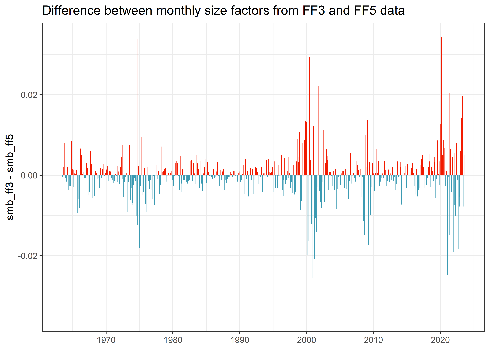

library(tidyverse)
library(frenchdata)
library(fixest)
start_date <- "1926-07-01"
end_date <- "2023-08-01"
factors_ff3_monthly_raw <- download_french_data("Fama/French 3 Factors")
factors_ff3_monthly <- factors_ff3_monthly_raw$subsets$data[[1]] |>
mutate(
month = floor_date(ymd(str_c(date, "01")), "month"),
across(c(RF, `Mkt-RF`, SMB, HML), ~as.numeric(.) / 100),
.keep = "none"
) |>
rename_with(str_to_lower) |>
rename(mkt_excess = `mkt-rf`)
factors_ff5_monthly_raw <- download_french_data("Fama/French 5 Factors (2x3)")
factors_ff5_monthly <- factors_ff5_monthly_raw$subsets$data[[1]] |>
mutate(
month = floor_date(ymd(str_c(date, "01")), "month"),
across(c(RF, `Mkt-RF`, SMB, HML, RMW, CMA), ~as.numeric(.) / 100),
.keep = "none"
) |>
rename_with(str_to_lower) |>
rename(mkt_excess = `mkt-rf`)
factors_ff_monthly <- factors_ff3_monthly |>
rename_with(.cols = c(mkt_excess, rf, smb, hml),
~str_c(.x, "_ff3")) |>
inner_join(
factors_ff5_monthly |>
select(month, mkt_excess, rf, smb, hml) |>
rename_with(.cols = c(mkt_excess, rf, smb, hml),
~str_c(.x, "_ff5")), by = "month") |>
filter(month >= start_date & month <= end_date)
industries_ff_monthly_raw <- download_french_data("10 Industry Portfolios")
industries_ff_monthly <- industries_ff_monthly_raw$subsets$data[[1]] |>
mutate(month = floor_date(ymd(str_c(date, "01")), "month")) |>
mutate(across(where(is.numeric), ~ . / 100)) |>
select(month, everything(), -date) |>
rename_with(str_to_lower)In our book chapters Replicating Fama and French Factors (R Version) and Replicating Fama and French Factors (Python Version), we show how to construct factor portfolios that are fairly close to the popular data from Prof. Kenneth French finance data library. In this blog post, I want to elaborate a bit more on the subtle difference between the size data in the Fama-French three (FF3)1 and five (FF5)2 factor data.
Analyzing monthly factor data
I first start by downloading the monthly Fama-French factors using the frenchdata package. The currently available data ranges from July 1926 to August 2023. 1926-07-01 to 2023-08-01.
Let us first inspect the summary statistics of each factor.
factors_ff_monthly |>
pivot_longer(cols = - month) |>
select(name, value) |>
drop_na() |>
group_by(name) |>
summarize(
mean = mean(value),
sd = sd(value),
min = min(value),
q05 = quantile(value, 0.05),
q50 = quantile(value, 0.50),
q95 = quantile(value, 0.95),
max = max(value),
n = n()
) |>
print(n = Inf)# A tibble: 8 × 9
name mean sd min q05 q50 q95 max n
<chr> <dbl> <dbl> <dbl> <dbl> <dbl> <dbl> <dbl> <int>
1 hml_ff3 0.00284 0.0300 -0.139 -0.0413 0.0022 0.0541 0.128 721
2 hml_ff5 0.00284 0.0300 -0.139 -0.0413 0.0022 0.0541 0.128 721
3 mkt_exce… 0.00568 0.0449 -0.232 -0.0726 0.0092 0.0713 0.161 721
4 mkt_exce… 0.00568 0.0449 -0.232 -0.0726 0.0092 0.0713 0.161 721
5 rf_ff3 0.00362 0.00266 0 0 0.0038 0.0081 0.0135 721
6 rf_ff5 0.00362 0.00266 0 0 0.0038 0.0081 0.0135 721
7 smb_ff3 0.00186 0.0304 -0.172 -0.0421 0.0011 0.0501 0.214 721
8 smb_ff5 0.00219 0.0302 -0.153 -0.0431 0.001 0.0481 0.183 721The above table shows that risk free rates rf_*, market excess returns mkt_excess_*, and value factors hml_* show de facto identical value across all statistics for FF3 and FF5. However, the size factors smb_* seem to be different between the data sets. Another way to show the difference is running regressions, as we do in our replication chapters:
model_smb <- lm(smb_ff3 ~ smb_ff5, data = factors_ff_monthly)
summary(model_smb)
Call:
lm(formula = smb_ff3 ~ smb_ff5, data = factors_ff_monthly)
Residuals:
Min 1Q Median 3Q Max
-0.03543 -0.00192 0.00032 0.00205 0.03373
Coefficients:
Estimate Std. Error t value Pr(>|t|)
(Intercept) -0.000303 0.000222 -1.36 0.17
smb_ff5 0.987055 0.007338 134.51 <2e-16 ***
---
Signif. codes: 0 '***' 0.001 '**' 0.01 '*' 0.05 '.' 0.1 ' ' 1
Residual standard error: 0.00595 on 719 degrees of freedom
Multiple R-squared: 0.962, Adjusted R-squared: 0.962
F-statistic: 1.81e+04 on 1 and 719 DF, p-value: <2e-16Regressing the FF3 size factor on its FF5 counterpart yields a coefficient of 0.99 and an R-squared around 96%, so definitely no perfect co-movement.
Is this difference just an artifact in the data, limited to a certain time period? Figure Figure 1 shows that there are differences throughout the whole sample.
factors_ff_monthly |>
mutate(difference = smb_ff3 - smb_ff5) |>
ggplot(aes(x = month, y = difference, fill = difference > 0)) +
geom_col() +
scale_x_date(date_breaks = "10 years", date_labels = "%Y") +
theme(legend.position = "none") +
labs(
x = NULL, y = "smb_ff3 - smb_ff5",
title = "Difference between monthly size factors from FF3 and FF5 data"
)
Figure 1: End-of-month difference between monthly size factors from Fama-French three (FF3) and five (FF5) factor data.
{kind=link}
Where does this difference come from? In my opinion, there is one likelyexplanation for the differences: the size portfolios portfolio_size and value portfolios portfolio_bm are constructed as independent sorts in FF3, while portfolio_bm, portfolio_op, and portfolio_inv are the result of dependent sorts in FF5 (depending on portfolio_size). In FF5, portfolio_size is then calculated on averages based on portfolio_bm, portfolio_op, and portfolio_inv portfolios. As all portfolios are the result of value-weighted return aggregation, it is hence very likely that these aggregations lead to different values.
These subtle differences might even impact your statistical tests. As an example, let us consider one of the industry portfolios from industry_ff_monthly. We use the ‘other’ portfolio, which contains sectors such as mines, construction, entertainment, finance, etc. We run a gression of the corresponding industry portfolios against the market, size, and value factors of FF3 and FF5, respectively.
industry_returns <- industries_ff_monthly |>
select(month, ret_other = other) |>
inner_join(factors_ff_monthly, by = "month")
model_ff3 <- feols(
ret_other ~ mkt_excess_ff3 + smb_ff3 + hml_ff3,
industry_returns
)
model_ff5 <- feols(
ret_other ~ mkt_excess_ff5 + smb_ff5 + hml_ff5,
industry_returns
)
etable(model_ff3, model_ff5, coefstat = "tstat") model_ff3 model_ff5
Dependent Var.: ret_other ret_other
Constant 0.0017** (2.694) 0.0017** (2.689)
mkt_excess_ff3 1.139*** (76.67)
smb_ff3 0.0500* (2.299)
hml_ff3 0.3984*** (18.48)
mkt_excess_ff5 1.135*** (76.35)
smb_ff5 0.0690** (3.196)
hml_ff5 0.3897*** (18.23)
_______________ _________________ _________________
VCOV type IID IID
Observations 721 721
R2 0.89991 0.90059
Adj. R2 0.89949 0.90017
---
Signif. codes: 0 '***' 0.001 '**' 0.01 '*' 0.05 '.' 0.1 ' ' 1The results show that the size factor is only significant at the 5% level for the FF3 data, but it is significant at the 1% level for the FF5 version!
A quick look at daily factors
Let us take a quick look at the daily factors to check whether the difference in size premia exists there as well. If my explanation for the difference is correct, then there should be differences. We can download the daily factor data in a similar fashion as the monthly data.
factors_ff3_daily_raw <- download_french_data("Fama/French 3 Factors [Daily]")
factors_ff3_daily <- factors_ff3_daily_raw$subsets$data[[1]] |>
mutate(
date = ymd(date),
across(c(RF, `Mkt-RF`, SMB, HML), ~as.numeric(.) / 100),
.keep = "none"
) |>
rename_with(str_to_lower) |>
rename(mkt_excess = `mkt-rf`)
factors_ff5_daily_raw <- download_french_data("Fama/French 5 Factors (2x3) [Daily]")
factors_ff5_daily <- factors_ff5_daily_raw$subsets$data[[1]] |>
mutate(
date = ymd(date),
across(c(RF, `Mkt-RF`, SMB, HML, RMW, CMA), ~as.numeric(.) / 100),
.keep = "none"
) |>
rename_with(str_to_lower) |>
rename(mkt_excess = `mkt-rf`)
factors_ff_daily <- factors_ff3_daily |>
rename_with(.cols = c(mkt_excess, rf, smb, hml),
~str_c(.x, "_ff3")) |>
inner_join(
factors_ff5_daily |>
select(date, mkt_excess, rf, smb, hml) |>
rename_with(.cols = c(mkt_excess, rf, smb, hml),
~str_c(.x, "_ff5")), by = "date") |>
filter(date >= start_date & date <= end_date)
model_smb <- lm(smb_ff3 ~ smb_ff5, data = factors_ff_daily)
summary(model_smb)
Call:
lm(formula = smb_ff3 ~ smb_ff5, data = factors_ff_daily)
Residuals:
Min 1Q Median 3Q Max
-0.019389 -0.000393 0.000026 0.000419 0.013334
Coefficients:
Estimate Std. Error t value Pr(>|t|)
(Intercept) -1.50e-05 1.02e-05 -1.48 0.14
smb_ff5 9.72e-01 1.88e-03 517.15 <2e-16 ***
---
Signif. codes: 0 '***' 0.001 '**' 0.01 '*' 0.05 '.' 0.1 ' ' 1
Residual standard error: 0.00125 on 15121 degrees of freedom
Multiple R-squared: 0.946, Adjusted R-squared: 0.946
F-statistic: 2.67e+05 on 1 and 15121 DF, p-value: <2e-16Regressing the FF3 size factor on its FF5 counterpart yields a coefficient of 0.97 and an R-squared around 95%, so again no perfect co-movement. Unreported results of the distributions and differences over time confirm the regression results and are in line with differences among monthly factor data.
Conclusion
Are there any implications for empirical applications? In my opinion, you should be careful when you want to test your portfolios against FF3 and FF5 factors. It is strictly speaking not correct to just use a subsample of factors from FF5 if you want to test against the FF3 factors. I rather recommend downloading both FF3 and FF5 and run tests with each data set separately.
Footnotes
Fama, E. F.; French, K. R. (1993). “Common risk factors in the returns on stocks and bonds”. Journal of Financial Economics. 33: 3–56. https://doi.org/10.1016/0304-405X(93)90023-5↩︎
Fama, E. F.; French, K. R. (2015). “A Five-Factor Asset Pricing Model”. Journal of Financial Economics. 116: 1–22. CiteSeerX 10.1.1.645.3745. https://doi.org/10.1016/j.jfineco.2014.10.010↩︎